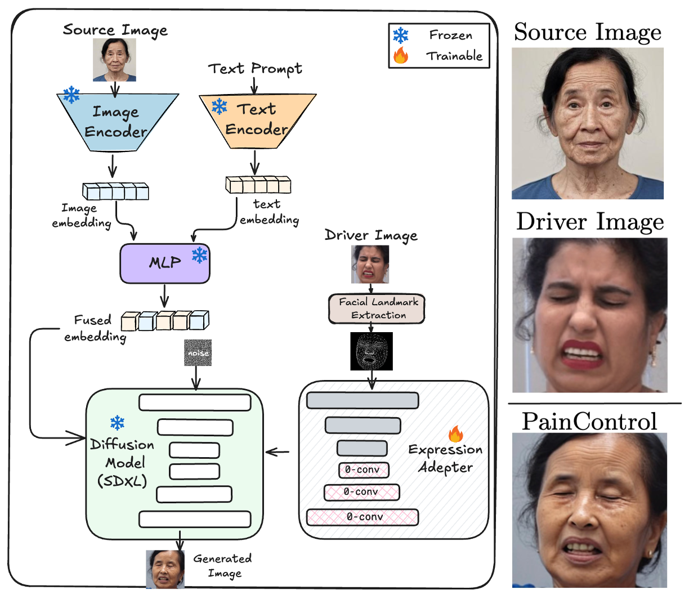
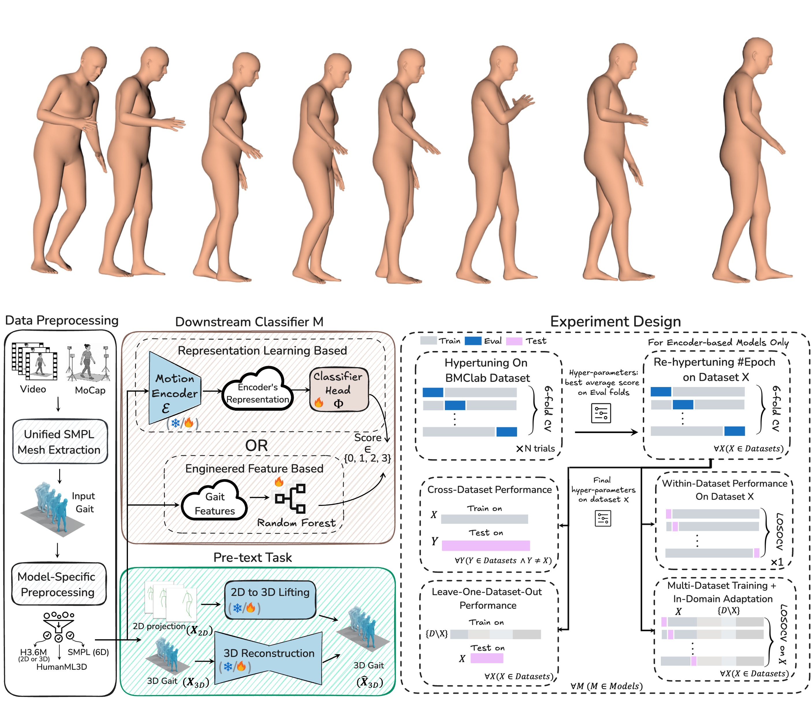
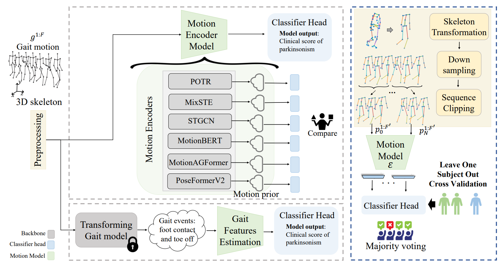
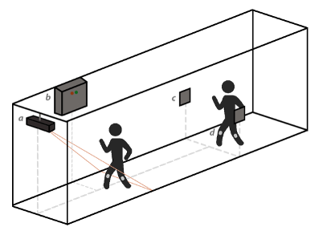
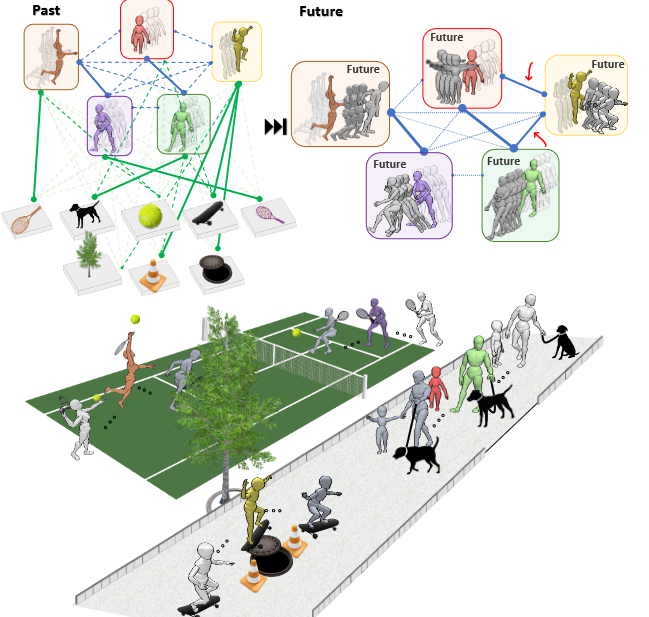
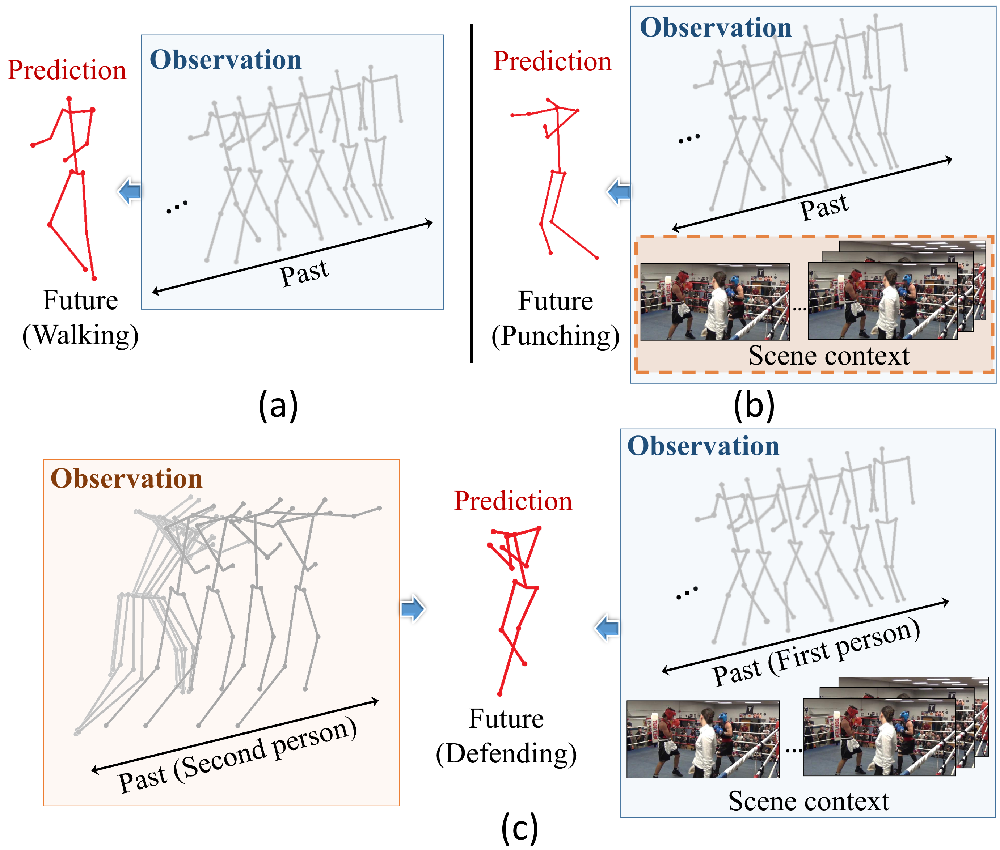
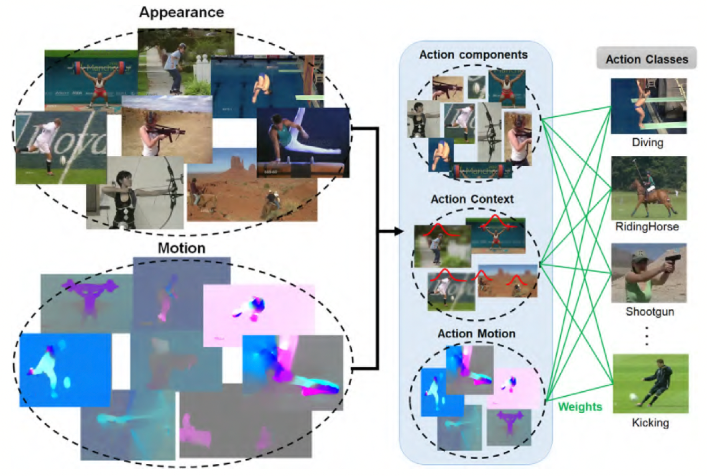

Splat2Mesh: From Gaussian Splats to Structured and Editable 3D Scenes
arXiv
Splat2Mesh transforms Gaussian splat scenes into structured, object-centric 3D assets with editable, textured meshes.
Building human-centered visual intelligence for motion, health, and interactive 3D worlds.
I'm a Computer Science PhD candidate at University of Toronto, supervised by Dr. Babak Taati and Dr. Andrea Iaboni. I am also a Faculty Affiliate Researcher at Vector Institute and a Research Assistant at KITE - University Health Network. Previously, I was a Researcher at Vision & Learning for Autonomous AI (VL4AI) Lab, Monash University. I'm currently doing an internship at Pickford AI, working on generative AI for video and 3D, including video generation, real-time 3D animation, dynamic scene generation, and world models for interactive and physically grounded environments.
My research focuses on generative models applied across a range of computer vision tasks, with particular focus on 3D human motion understanding, realistic animation generation, dynamic scene generation, world models, human-centered physical AI, and healthcare applications such as clinical gait analysis.
arXiv
Splat2Mesh transforms Gaussian splat scenes into structured, object-centric 3D assets with editable, textured meshes.
arXiv
Puppeteer generates speech-aligned 3D gestures that adapt to body posture and surrounding objects using causal latent diffusion, enabled by SceneGes, a new dataset for object-grounded co-speech gestures.
arXivEuropean Conference on Computer Vision Workshops (Oral), 2026
PickStyle is a diffusion-based video style transfer framework that preserves video context while applying a target visual style. It uses low-rank style adapters and synthetic clip augmentation from paired images for training, and introduces Context-Style Classifier-Free Guidance (CS-CFG) to independently control content and style, achieving temporally consistent and style-faithful video results.
Winter Conference on Applications of Computer Vision (WACV), 2026
GAITGen is a generative framework that synthesizes realistic gait sequences conditioned on Parkinson’s severity. Using a Conditional Residual VQ-VAE and tailored Transformers, it disentangles motion and pathology features to produce clinically meaningful gait data. GAITGen enhances dataset diversity and improves performance in parkinsonian gait analysis tasks.

BioMedical Engineering OnLine, 2026
PainControl is a facial landmark-guided method for identity-preserving pain expression transfer.

Neural Information Processing Systems (NeurIPS), 2025
CARE-PD is the largest publicly available archive of 3D mesh gait data for Parkinson’s Disease, collected across 9 cohorts from 8 clinical centers. It provides standardized, anonymized SMPL representations and benchmark protocols for clinical motion analysis on PD.

IEEE International Conference on Automatic Face and Gesture Recognition (FG), 2024
Evaluating recent motion encoders for the task of parkinsonism severity estimation (UPDRS III gait)

Winter Conference on Applications of Computer Vision (WACV), 2024
Estimating 3D locations of 17 main joints from a monocular video.

IEEE journal of biomedical and health informatics (JBHI), 2023
A machine learning system using ambient gait monitoring to predict short-term fall risk in people with dementia.

IEEE/CVF International Conference on Computer Vision, (ICCV 2021)
TRiPOD jointly forecasts human body pose dynamics and global trajectories in the wild by modelling human-human and human-object interactions.

IEEE Robotics and Automation Letters (RA-L) and IEEE/RSJ International Conference on Intelligent Robots and Systems (IROS), 2020
A unified end-to-end model that predicts both human global motion (trajectory) and detailed body pose jointly, using social and scene context to improve forecasting.

Image and Vision Computing, 2019
Proposes a component-based video content representation for human action recognition, decomposing videos into meaningful parts to improve classification in complex scenes.
Workshop on Human Motion Challenges in Real-World and Clinical Settings.
+ Benchmark and Challenge on Parkinsonian Gait.
An object-grounded co-speech gesture dataset for environment and posture-aware gesture generation.
A multi-site benchmark for Parkinson's disease gait assessment.
SOcial MOtion Forecasting benchmark for human motion prediction.
The first workshop, benchmark, and challenge on forecasting human motion in the wild.
Beyond research
Reviewer for leading computer vision, machine learning, robotics, and healthcare AI venues.